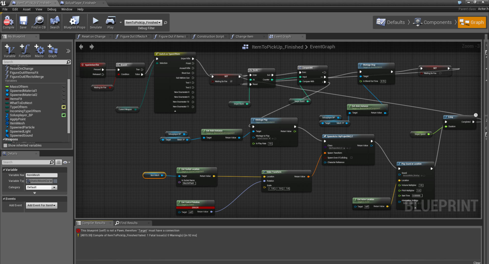

Мои учебные интересы
Я учусь на 3-м курсе специальности "Прикладная информатика" и стараюсь глубоко разбираться в том, что мне действительно интересно. Вот основные направления, которые меня привлекают:
- Технологии программирования — изучаю современные подходы к разработке, паттерны проектирования и лучшие практики написания кода.
- Основы языка Java — активно осваиваю Java, пишу учебные проекты, знакомлюсь с JUnit для модульного тестирования.
- Веб-технологии — владею HTML и CSS на уровне профессиональной вёрстки, работаю с WordPress, планирую углубляться в JavaScript и фреймворки.
- Операционные системы — интересуюсь устройством ОС, работой с командной строкой, Docker и виртуализацией.
- Дискретная математика — люблю логику, комбинаторику и теорию графов, которые лежат в основе алгоритмов.
- Нейронные сети и их приложения — хочу разобраться в машинном обучении, уже работала с Google Colab и Pandas для обработки данных.
Что я уже умею и чем горжусь
- Разработала четыре сайта: интернет-магазин «DoorCraft», сайт турагентства «Dream», сайт для «Cyber Group» и сайт «Центра помощи семьям в кризисной ситуации».
- На конференции «ЭНЕРГЕТИКА» (март 2024) защитила проект «Стартер» и получила диплом II степени.
- Прошла производственную практику в «Cyber Group» (июль 2026), где вёрстала разделы «Партнеры» и «Проекты».
- Участвовала в аудите и исправлении ошибок сайта благотворительного центра.
- Готовлюсь к карьере в автоматизации тестирования — изучаю JUnit и тест-дизайн.
